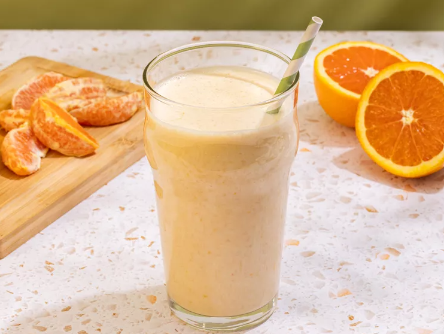

Odin Recipes
Orange Creamsicle Protein Shake Recipe

Description
This orange creamsicle protein shake is reminiscent of the famous ice cream bar. It's tasty, healthy, and sure to keep you full until lunch or beyond.
Ingredients
- 1 orange - zested, peeled, and separated into segments
- 1 cup soy milk
- 1 (5.3 ounce) container plain Greek yogurt
- 5 ice cubes
1 scoop vanilla protein powder
- 1 teaspoon vanilla extract
Steps
- Gather all ingredients.
- Combine orange segments, zest, soy milk, yogurt, ice, protein powder, and vanilla in a blender.
Home